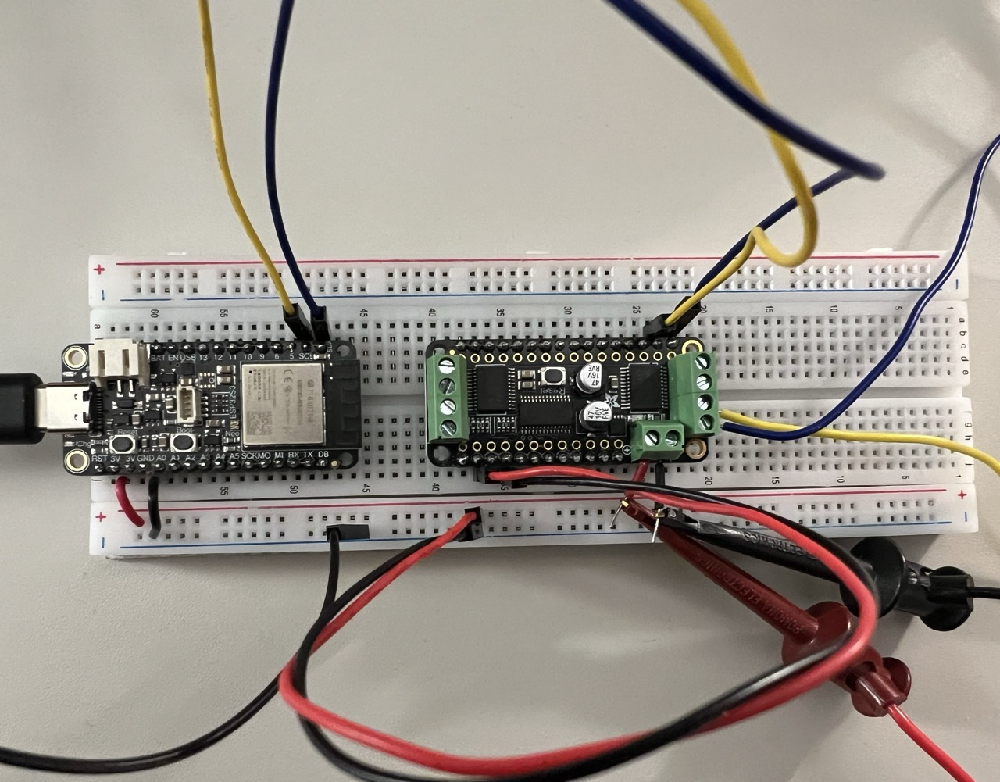

Since I’m not great with caring for my plants, most of my pots are self-watering, with a water reservoir at the bottom that the roots reach into — I use Lechuza planters with an inorganic substrate. I like them a lot: The roots draw up water via capillary action from the reservoir, and the reservoir has a small fill-level indicator, making it very difficult to accidendally over- or underwater the plants.
Unfortunately, some of my thirstier plants can empty the planter’s reservoir in less than a week. When I go on holiday for longer than that, I start worrying whether the plants survive. Rather than doing the reasonable thing and asking someone to water my plants ocassionally — that’s what I used to do anyway — I’m trying to build an automatic solution. Other people may have the same problem, and perhaps this can be useful.
All files are on my GitHub.
Plan & shopping list
What’s the concept? A microcontroller monitors a water sensor at the bottom of the reservoir. When it’s been dry for a while — say, a day or two — a pump is started that pumps in water from a larger reservoir to the planter’s smaller reservoir. A second water sensor is installed at the top of the planter’s reservoir to make sure it does not accidentally spill over. For extra peace of mind, the microcontroller has WiFi, acts like a smart home device, and the whole thing can be monitored or controlled from anywhere using my phone.
Here’s what I bought so far for some first tests, all available from Digikey:
- 1x Adafruit 5477 Feather ESP32-S3: An EPS32 microcontroller dev-board, with WiFi onboard, so it can be integrated into a smart home system. 17.50$
- 2x SEN0205 water sensor (datahsheet): An optical water sensor, comes with about 30 cm of waterproof wiring. 5.38 CHF
- 1x Adafruit 1150 Peristaltic Pump: An easy to use 12V pump with some tubing attached. 24.95$
- 1x Adafruit 2927 Motor FeatherWing: Powers the pump and generates the control signal. 19.95$
- 1x Adafruit 5807 HUSB238 USB C Power Delivery: Optional, provides power to the pump. It’s got an IC on it that I wanted to try for a while for a different project, so it’s convenient. Could also use any other 12V power supply. 5.95$
Warmup: Water level sensor
void
void
The water level sensor is very convenient to use. While the datasheet specifies it as operating with 5V logic and power, it runs without a problem from the ESP32’s 3.3V supply and logic levels — great. The only other connection needed is one wire for logic: The sensor yields a logic high when it’s underwater, and logic low when not. Also nice: It switches state as soon as I pull it out of the water, even when the sensor is still a bit wet — it is indeed a water sensor, not a moisture sensor. That’s exactly what I need.
Great confusion: The case of the silent pump
The pump has a geared-down DC motor, and the specifications say it needs about 300 mA at 12 V. While I wanted to use the USB-C power delivery board I bought, I realized that USB standards are a mess, and my wall charger cannot output 12 V (though 5V, 9V, and 20V work fine, of course). I’m supplying it with a lab PSU instead.
For wiring up the motor, polarity does not matter for a first test: Reversing the wires on a DC motor simply makes it spin the other way.
The driver board I bought seems to be wildly overqualified for the job: It can drive four DC motors at 1.2 A each, so it would easily be able to water four plants at the same time.
It communicates with the ESP32 via I2C, with base address 0x60, which can be changed with jumpers on the back, should I want to power more than four pumos with a single microcontroller — unlikely but nice to have.
The code is simple, everything’s taken care of by Adafruit’s Motor Shield V2 library, which is available on platformIO.
Then why does it not work?
From the motor test code, I get Could not find Motor Shield. Check wiring., even after checking all the wires.
I checked the logic voltage: 3.29 V from the ESP32 board arrives at the driver’s VDD pins — a tiny bit low, but certainly fine.
12.7 V arrive at the power input screw terminals for the motor driver — also good.
That leaves the I2C.
It needs pullup resistors to work, but those should already be on the driver board.
I decided to get the logic analyzer (an Analog Discovery 3) to figure out what’s wrong.
As I connected up the logic analyzer, I noticed something looked off. Can you see it? ESP32 board on the left, motor driver board on the right. You don’t need to know any of the pinouts to see what’s wrong here, though it took my close to an hour to notice it:

The wiring on the driver board is flipped around! Look at the rows of pins on the ESP32 board: A short row of pins on top, and a longer one on the bottom. The motor driver board can be stacked on top of the ESP32, though I did not have the right headers for that, so I just connected the “stack” manually. However, the motor driver board is in the wrong orientation — short row on the bottom, long row on top. I was applying power and I2C to random pins on the board. Ohh, I’m dumb.
Well, I flipped the wires around, and now it works fine, it spins:
Adafruit_MotorShield AFMS = ;
Adafruit_DCMotor* myMotor = AFMS.;
void
void
Can it suction feed water through half a meter of tubing? No problem. It shakes quite a bit once water’s inside the pump, but not too bad. It pulls about 410 mA at full load — quite thirsty, and more than specified from the specifications. At 12 V, that’s almost 5W. The flow rate is tiny, as expected — I’ll measure it later. This thing will have to run for a few minutes to fill up a planter reservoir. I should plan a torture test to see if it’s up to the task, and monitor driver board and motor temperature with my calibrated fingertips.
Final test of the day: Sensor feedback
Not intimidated by having cluelessly wired the board upside down and not noticing it for an hour, I thought I’d try out the overspill-prevention logic. Behold this masterpiece of closed-loop control engineering:
Adafruit_MotorShield AFMS = ;
Adafruit_DCMotor* myMotor = AFMS.;
void
void
The pump now keeps going until water is detected, at which point it stops. Runs like a charm. The probability of this thing turning into something useful one day has risen remarkably, to almost 10% now.
Next steps
I’m quite happy with the first tests, despite the accidental detour with the wiring. All the basic hardware components are functional, and seem easy to work with. The 80/20 Pareto model suggests that 80% of the results come from 20% of the effort, and I think that point is fast approaching.
- Try out this new-fangled IoT thing with the ESP32 (that’s the reason I went with this platform: It’s apparently great for smart home devices)
- Measure tube diameters, and buy some more tubing. A few meters would be good.
- Buy a big water container as reservoir
- Hook everything up to one of my planters, perhaps with 3d-printed mounts (nah, just use tape)
- Milestone #1: Water an actual plant
- Milestone #2: Remote monitor and control the system via my phone (bragging rights start here)
After that, the low effort / high-result phase will probably be over, and polishing the system to be reliable and affordable will take some more time:
- Buy a few more water sensors (to detect an empty main reservoir)
- Measure how high the pump can suction feed, which determines allowable reservoir position relative to planter
- Do a pump torture test, confirm reliability
- (Optional) Calibrate pump flow rate to track used water in mL
- (Optional) Integrate a battery for easier handling
- Milestone #3: Do a long-term (at least two waterinc cycles) test of automated watering
- Make the thing cheaper and easy to reproduce (probably custom PCB and 3d-printed enclosure)
- Get all my plants ready for reliable autonomous irrigation
Looking at how much time I’ve left until I’m on holiday, I won’t be able to do everything, especially the latter steps. No worries, I can still ask someone to check in on my plants from time to time, but I like the idea of automating it as far as I can get.
Other lessons learned
Some things always go wrong, so here’s a small collection of things I learned, or that I’ll try to do better next time. I keep this mostly for my own reference — if I write it down, I tend to remember it — though maybe someone else finds it useful.
Take more pictures and videos
It’s easy to forget to take pictures and videos while in the testing and debugging process. Makes for much more interesting notes, and it’s motivating to track progress that way.
Use a breadboard as alignment aid when soldering in header pins
When soldering header pins into a dev board, use a cheap breadboard to help align the pins well. To avoid melting the breadboard, only do this for the outermost pins, so they are solidly in place. If I forget, I can still use flat, long-nosed pliers to bend the pins, but the resulting fit into the breadboard leaves something to be desired.
USB C power is confusing
USB-C power supplies/wall chargers may implement some of the voltages, but not others. For example, my Anker unit can output 5V, 15V, and 20V, but not 12V. With modern USB-C cables being able to push up to 240W and 120 GBit/s, and Wikipedia listing 11 different standards of USB3 and USB4, I should not have exactly expected this to be straightforward. Have a look at these tables. There’s one that shows cable compatbility with USB4: It has more rows than there are USB3 and USB4 standards combined, and multiple marketing names per cable. I’m surprised there’s not a “Controversies” section in the Wikipedia article.
Development boards save time, even though they’re not cheap
Buying the comparatively expensive development boards is a larger one-off expense than designing for a single PCB with tailored components, but it’s an easy way to get started, and it allows me to get my hands on working hardware as soon as possible. Eventually, I’ll need a few of these watering systems to take care of all my plants, and at that point, a custom PCB makes sense.
How to get PlatformIO to upload and then monitor serial traffic
When having serial monitor open, uploading code may fail with
A fatal error occurred: Could not open /dev/cu.usbmodem2101, the port is busy or doesn't exist.
Stop the serial monitor (and any other interfering terminals), and it will work.
Much more convenient: Use the “Upload and Monitor” button in the PlatformIO sidebar, that keeps everything in one terminal.
If it’s still stuck, the ESP32 can be reset by holding the BOOT button, pressing RESET, and then releasing the BOOT button.
It also helps to manually define the upload port in the platform.ini, so it doesn’t have to guess which device file corresponds to the board.